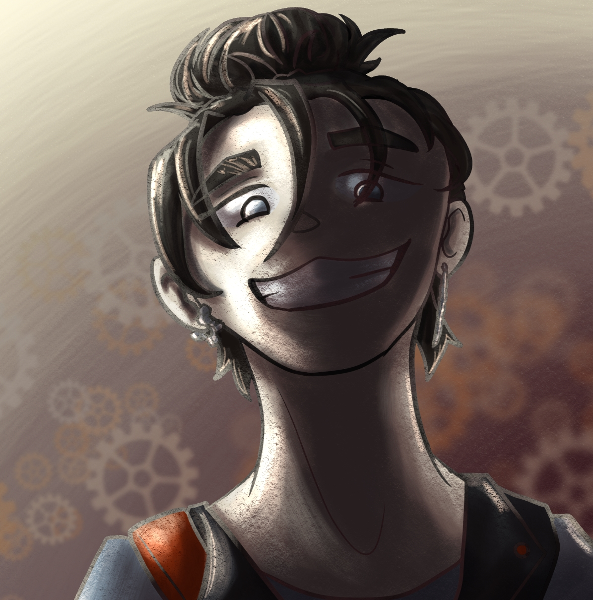
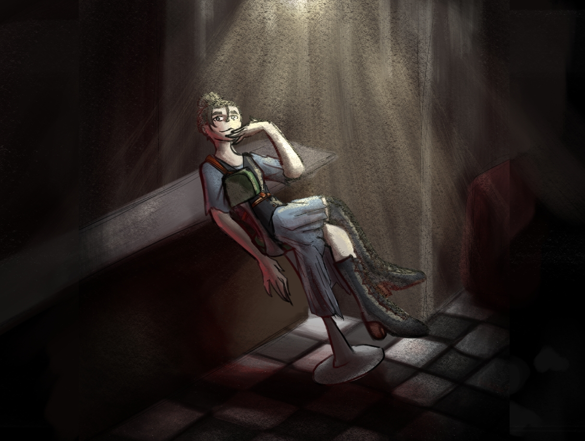

Eve
Eve 24
She/Her
She grew up in a small farmland pocket of Draxian with her grandparents, parents and 8 siblings. She loves to build gadgets and tinker around trying to figure out how they work. She went to the same college as Matt and they are close friends. She has a chill and curious personality and enjoys spending time with people. She went to Victor after Matt joined Keystone PI and Victor let her join because she showed her talent for building and electronics.


Hobies
Tinkering around with whatever she finds, She spends her time building, drawing and dreaming up new ideas in her and Matt's cramped apartment.
Personality
She has a calm and curious personality and enjoys spending time with people.